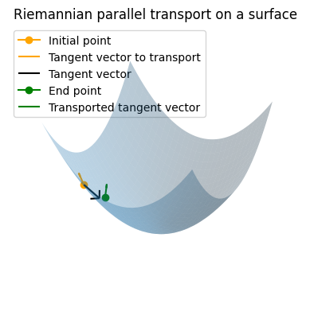
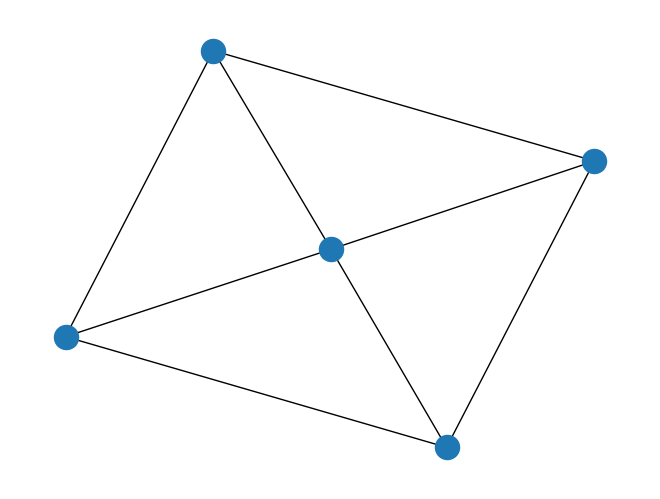
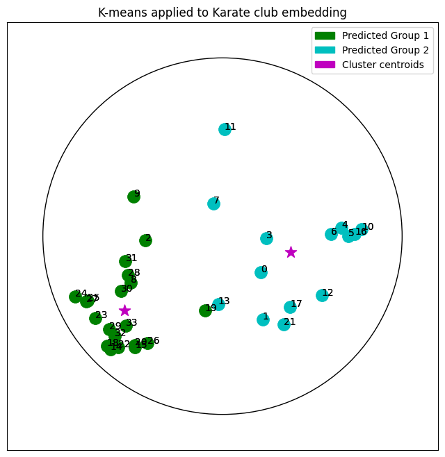

Tutorials#
Practical methods#
Data on Manifolds

From vector spaces to manifolds
Learning on Tangent Data

Fréchet Mean and Tangent PCA

K-Means clustering on a Riemannian Manifold

Information geometry

Implement your own Riemannian Geometry

Shape analysis of curves with the Square Root Velocity metric

Align all and Compute for Graphs
Real world applications#

Shape Analysis of Cancer Cells

Hand gesture classification with EMG data using Riemannian metrics

Hyperbolic Embedding of Graphs and Clustering

Classifying hands poses with Kendall shape spaces
Computing with shapes of landmarks in Kendall shape spaces
Computing with triangular shapes in Kendall framework
Optimization of Sao Paulo traffic
Graph Space